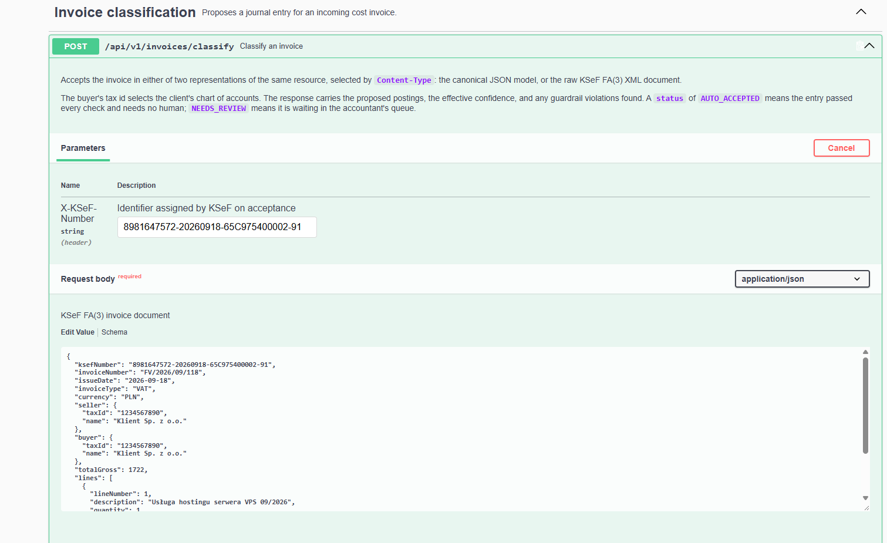

Personal project · Spring Boot + AI
A service that takes a cost invoice — as JSON, or as the raw XML received from KSeF — and proposes a journal entry together with its reasoning.
For business
What is KSeF?
KSeF (Krajowy System e-Faktur — the National e-Invoicing System) is Poland's government-run invoicing platform. From February 2026 for large businesses and April 2026 for everyone else, every B2B invoice issued in Poland has to go through it.
The seller no longer emails a PDF. They submit a structured XML document — schema FA(3), defined by the Ministry of Finance — to the state, which stamps it with an identifier and makes it available to the buyer. In practice: every Polish company now receives all of its cost invoices as the same machine-readable document, from the same place.
Before writing a line of code I researched what the market looks like after KSeF became mandatory (February and April 2026). The conclusion was counter-intuitive: invoices now arrive as structured FA(3) XML, so the problem the industry spent fifteen years solving — OCR and field extraction — has simply stopped existing.
What did not go away is the posting decision itself: picking an account from this particular client's chart of accounts, classifying the input VAT (full / 50% / none), and deciding whether the cost is deductible for income tax. That is still done by hand.
The observation the whole project rests on: in an FA(3) invoice, the only unstructured field is P_7 — the name of the goods or service. And that is precisely the field that decides the account. "VPS hosting service", "Diesel, vehicle WA12345" and "Catering — board meeting" land on three different accounts with three different tax treatments, and no regular expression will tell them apart.
Industry sources put the handling time at roughly 15 minutes per document before automation and about 2 minutes after. For an accounting office processing 3,000 invoices a month, three minutes saved per document is around 150 hours a month — roughly one full-time position. The model costs a fraction of a cent per invoice, which is negligible at that scale. Only once that arithmetic held did building make sense.
Deliberately not a 100% automation: an accountant is personally answerable for a journal entry, so the model's proposal never reaches the books unchecked. The system sorts documents itself — confident ones are posted without a human, doubtful ones go to a review queue. The value is measured by a built-in straight-through rate: the share of invoices posted without intervention, which is exactly what converts into hours saved.
Routine invoices (hosting, fuel with its 50% VAT deduction, catering as non-deductible) were posted automatically. An unusual one — "mine tailings reclamation" — was routed to the accountant rather than guessed at. That behaviour is what the entire design is arranged around.

Content-Type. The response carries the proposed postings, the effective confidence and any guardrail violations — AUTO_ACCEPTED or NEEDS_REVIEW.For developers
The project was built alongside an AI assistant (Claude Code), and tests were the instrument for steering it rather than documentation written after the fact. The API contract was pinned down as 23 tests that passed before any classification engine existed. Every guardrail got its own test before its implementation.
The effect: each iteration had a hard acceptance criterion instead of a judgement that something "looks right", and the scope of the next step came from a failing test rather than from drift. The same loop caught two real defects during the session — an API message whose number formatting depended on the server locale, and a document held for review that still reported confidence: 1.0 — both now covered by regression tests.
InvoiceClassifier is a port, so the orchestration, the guardrails and the entire HTTP surface are testable without touching a model provider: 89 tests run with no API key and no network.
InvoiceCommand → AccountingContext → InvoiceClassifier (LLM)
→ PostingValidator → ConfidencePolicy → persist + audit
The client's chart of accounts is injected into the prompt as a closed list, so the model selects rather than invents. Independently of that, seven deterministic rules re-check the answer against facts the application already knows:
P_12A violation blocks auto-acceptance regardless of the confidence the model claimed — an LLM's self-assessment is treated as one input, deterministically penalised, never as evidence. An accountant's correction passes through the same rules.
Content-Type negotiationopenai-java-core and springdoc each ship the same Swagger annotation package in different versions, which broke OpenAPI document generationDocumented as such, rather than left unsaid:
Open to new opportunities and selected freelance projects.
Feel free to reach out via LinkedIn.